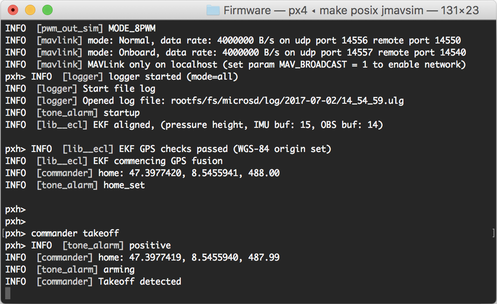
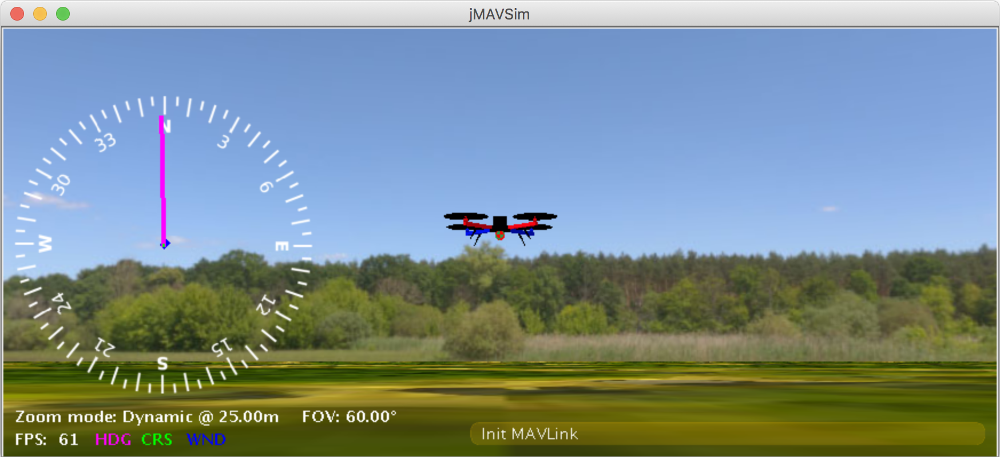
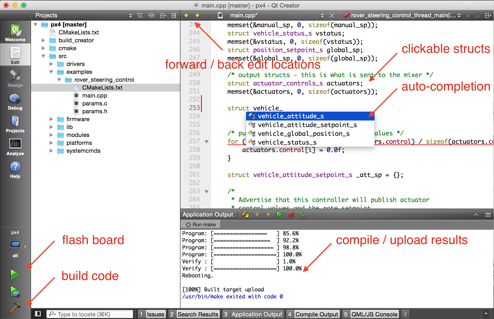

PX4 Software 빌드하기
PX4는 콘솔이나 IDE 개발환경에서 빌드할 수 있습니다.
소프트웨어 다운로드와 처음 빌드하기
콘솔 환경을 이용해서 시뮬레이트 타겟용으로 처음 빌드를 해봅시다. 실제 하드웨어나 IDE에서 진행하기 전에 시스템 셋업이 제대로 되었는지를 확인할 수 있습니다.
먼저 터미널 띄우기
- OS X의 경우 ⌘-space를 누르고 'terminal' 찾기
- Ubuntu의 경우, 런치바를 클릭하고 'terminal' 찾기
- Windows의 경우, 시작 메뉴에서 PX4 폴더 찾은 후에 'PX4 Console' 클릭하기
PX4/Firmware 저장소를 clone하고 jMAVSim 타겟으로 빌드합니다. 아래와 같습니다. 숙련된 개발자는 자신의 fork를 clone합니다.
mkdir -p ~/src
cd ~/src
git clone https://github.com/PX4/Firmware.git
cd Firmware
make posix jmavsim
아래와 같이 PX4 콘솔이 뜨고:

다음과 같이 입력하면 드론이 이륙:
pxh> commander takeoff

CTRL-C 를 누르면 시뮬레이션과 시뮬레이션되는 flight code가 멈추게 됩니다. 시뮬레이션 셋업의 상세한 내용은 다음을 참고 : jMAVSim Simulation.
그라운드 컨트롤 스테이션으로 시뮬레이션 비행은 실제 비행체로 동작하는 것과 유사합니다. 비행체가 비행 중일때 지도에서 위치를 클릭하고 슬라이더를 활성화시킵니다. 이렇게 하면 비행체가 이동하게 됩니다.

NuttX / Pixhawk 기반 보드
빌드하기
NuttX- 나 Pixhawk- 기반 보드용으로 빌드하기 위해서는 Firmware 디렉토리로 가서 여러분이 가진 보드에 적합한 빌드를 위해서 make를 호출합니다.
아래 예제에서 빌드 타겟
px4fmu-v2의 첫번째 부분은 autopilot 하드웨어 버전이고default는 설정 이름입니다.(이경우 "default" 설정) PX4의 모든 빌드 타겟은 다음과 같은 로직을 따릅니다.
예제로 Pixhawk 1 용으로 빌드하는 경우 다음과 같은 명령을 사용:
cd Firmware
make px4fmu-v2_default
성공적으로 실행되면 다음과 같이 출력:
[100%] Linking CXX executable firmware_nuttx
[100%] Built target firmware_nuttx
Scanning dependencies of target build/firmware_px4fmu-v2
[100%] Generating nuttx-px4fmu-v2-default.px4
[100%] Built target build/firmware_px4fmu-v2
보드들에 대한 빌드 명령 목록:
- Pixhawk 1:
make px4fmu-v2_default - HKPilot32:
make px4fmu-v2_default - Pixfalcon:
make px4fmu-v2_default - Dropix:
make px4fmu-v2_default - mRo Pixhawk:
make px4fmu-v3_default(supports 2MB Flash) - Pixhawk 2:
make px4fmu-v3_default - Pixracer:
make px4fmu-v4_default - MindPX/MindRacer:
make px4fmu-v4_default - Pixhawk Mini:
make px4fmu-v3_default - Pixhawk 3 Pro:
make px4fmu-v4pro_default - Crazyflie 2.0:
make crazyflie_default - Intel® Aero Ready to Fly Drone:
make aerofc-v1_default - Pixhawk 4:
make px4fmu-v5_default - AUAV-X2 (Discontinued):
make px4fmu-v2_default
펌웨어 업로드 (보드에 flash)
컴파일된 바이너리를 USB로 하드웨어에 업로드하기 위해 upload를 make 명령에 추가합니다.
make px4fmu-v2_default upload
성공적으로 실행되면 다음과 같이 출력:
Erase : [====================] 100.0%
Program: [====================] 100.0%
Verify : [====================] 100.0%
Rebooting.
[100%] Built target upload
기타 보드들
다음 보드들에 대해서 빌드와 배포는 좀더 복잡합니다.
Raspberry Pi 2/3 보드
아래 명령은 Raspbian용으로 타겟을 빌드합니다.
크로스-컴파일러 빌드
cd Firmware
make posix_rpi_cross # for cross-compiler build
build/posix_rpi_cross/src/firmware/posix 디렉토리에 실행가능한 "px4" 파일이 있습니다. RPi를 ssh로 연결할 수 있는지 확인합니다. RPi에 접근하는 방법를 참고합니다.
다음으로 RPi의 IP(혹은 hostname)를 다음과 같이 설정 :
export AUTOPILOT_HOST=192.168.X.X
그리고 upload :
cd Firmware
make posix_rpi_cross upload # for cross-compiler build
다음으로 ssh에서 연결하고 root 권한으로 실행 :
sudo ./px4 px4.config
Native build
Pi에서 직접 빌드를 하는 경우에 native build target(posix_rpi_native)이 필요합니다.
cd Firmware
make posix_rpi_native # for native build
build/posix_rpi_native/src/firmware/posix 디렉토리에 실행가능한 "px4" 파일이 있습니다. 직접 실행하기 :
sudo ./build/posix_rpi_native/src/firmware/posix/px4 ./posix-configs/rpi/px4.config
px4 실행이 성공적으로 되면 다음과 같은 메시지가 나옵니다 :
______ __ __ ___
| ___ \ \ \ / / / |
| |_/ / \ V / / /| |
| __/ / \ / /_| |
| | / /^\ \ \___ |
\_| \/ \/ |_/
px4 starting.
pxh>
자동시작
px4 자동구동시키려면 /etc/rc.local 파일에 다음을 추가합니다.(native build를 사용하고 있다면 적절히 수정) 위치는 exit 0 바로 직전입니다. :
cd /home/pi && ./px4 -d px4.config > px4.log
패롯 비밥
Bebop 지원은 아직 초기 단계로 주의해서 사용해야 합니다.
빌드하기
cd Firmware
make posix_bebop_default
Bebop을 켜고 호스트 머신을 Bebop의 wifi와 연결합니다. 다음으로 파워 버튼을 4번 눌러서 ADB를 활성화 시키고 telnet daemon을 구동시킵니다.
make posix_bebop_default upload
이렇게 하면 PX4 mainapp을 /usr/bin에 업로드시키고 /home/root/parameters가 없다면 이를 생성합니다. 추가로 Bebop의 mixer 파일과 px4.config가 필요합니다. 현재 이 두 파일은 다음 명령을 통해 수동으로 복사합니다.
adb connect 192.168.42.1:9050
adb push ROMFS/px4fmu_common/mixers/bebop.main.mix /home/root
adb push posix-configs/bebop/px4.config /home/root
adb disconnect
실행하기
Bebop의 wifi에 연결하고 파워 버튼을 4번 누릅니다. 다음으로 Bebop에 telnet이나 adb sehll로 연결하고 아래 명령을 실행합니다.
telnet 192.168.42.1
Bebop의 원래 드라이버를 kill 하기 :
kk
그리고 PX4 mainapp을 구동시키기 :
px4 /home/root/px4.config
Bebop을 날리기 위해서는 호스트 머신에 조이스틱 장치를 연결하고 QGroundControl를 시작합니다. Bebop과 조이스틱 둘다 인식되어야 합니다. 지시를 따라서 센서를 칼리브레이션하고 조이스틱 장치를 셋업합니다.
자동시작
비밥에서 부팅시에 자동으로 PX4를 시작되게 하려면, init 스크립트 /etc/init.d/rcS_mode_default를 수정해야합니다. 다음 라인을 커맨트 처리합니다 :
DragonStarter.sh -out2null &
다음으로 교체합니다:
px4 -d /home/root/px4.config > /home/root/px4.log
위에서 설명한 것처럼 파워 버튼을 4번 눌러서 adb server를 활성화시키고 adb server에 연결합니다. :
adb connect 192.168.42.1:9050
쓰기가 가능하도록 시스템 파티션을 다시 마운트시킵니다 :
adb shell mount -o remount,rw /
파일을 수동으로 수정하는 것을 막기 위해서 다음을 사용할 수 있습니다: https://gist.github.com/mhkabir/b0433f0651f006e3c7ac4e1cbd83f1e8
원본을 저장하고 비밥에 집어 넣습니다.
adb shell cp /etc/init.d/rcS_mode_default /etc/init.d/rcS_mode_default_backup
adb push rcS_mode_default /etc/init.d/
Sync and reboot:
adb shell sync
adb shell reboot
OcPoC-Zynq Mini
OcPoC-Zynq Mini에 관련된 빌드 :
- Aerotenna OcPoC-Zynq Mini Flight Controller > Building PX4 for OcPoC-Zynq (PX4 사용자 가이드)
- OcPoC PX4 Setup 페이지
QuRT / Snapdragon 기반 보드
빌드하기
NOTE: Qualcomm ESC 보드 (UART-기반)을 사용하고 있다면, 여기 지시를 참고하세요. 일반 PWM 기반 ESC 보드를 사용하는 경우에는 이 페이지의 내용을 계속 따라하면 됩니다.
아래 명령으로 Linux와 DSP쪽에 대해서 타겟을 빌드합니다. 실행되면 muORB를 통해 서로 통신합니다.
cd Firmware
make eagle_default
장치에 SW를 로드하기 위해서 USB 케이블을 연결하고 장치가 부팅되는지 확인합니다. 새로운 터미널에서 이를 실행합니다 :
adb shell
이전 터미널로 돌아가서 업로드 :
make eagle_default upload
mainapp.config 와 px4.config 2개 설정 파일을 장치로 복사하게 됩니다. 장치에 있는 시작 스크립트를 직접 수정하고자 한다면 이 파일들은 /usr/share/data/adsp/px4.config 와 /home/linaro/mainapp.config 내에 각각 저장되어 있습니다.
믹서는 현재 수동으로 복사해야 합니다:
adb push ROMFS/px4fmu_common/mixers/quad_x.main.mix /usr/share/data/adsp
실행하기
DSP 디버그 모니터 실행:
${HEXAGON_SDK_ROOT}/tools/debug/mini-dm/Linux_Debug/mini-dm
Note: Mac에서는 nano-dm를 사용할 수 있습니다.
ADB 쉘로 돌아가서 px4를 실행:
cd /home/linaro
./px4 mainapp.config
px4는 USB 케이블 연결을 끊자마자 멈추게 됩니다.(혹은 ssh 세션이 종료되거나) 비행을 위해서 px4가 부팅뒤에 자동으로 시작되도록 해야 합니다.
자동시작
Snapdragon가 부팅되고 px4를 실행시키려면 rc.local에 시작시키는 부분을 추가할 수 있습니다 :
아니면 Snapdragon에 직접 /etc/rc.local을 수정:
adb shell
vim /etc/rc.local
이 파일을 여러분의 컴퓨터에 복사하고 수정한 후에 다시 복사:
adb pull /etc/rc.local
gedit rc.local
adb push rc.local /etc/rc.local
자동 시작을 위해서 exit 0전에 다음 라인을 추가합니다 :
(cd /home/linaro && ./px4 mainapp.config > mainapp.log)
exit 0
rc.local가 실행되는지 확인:
adb shell
chmod +x /etc/rc.local
다음으로 Snapdragon을 리부팅:
adb reboot
IDE에서 컴파일하기
PX4 시스템은 Qt Creator, Eclipse, Sublime Text를 지원합니다. Qt Creator가 가장 사용자를 위한 기능이 많아서 유일하게 공식적으로 지원하는 IDE입니다. Eclipse와 Sublime의 경우 전문가가 아니라면 사용하기 쉽지 않습니다. 하드코어 사용자는 Eclipse project와 Sublime project를 소스 트리에서 찾을 수 있습니다.
Qt Creator 기능
Qt creator는 클릭가능한 심볼, 자동완성기능, 빌드, 펌웨어 flash 기능을 제공합니다.

Qt Creator (리눅스에서)
Qt Creator를 시작하기 전에, project file이 있어야 합니다. :
cd ~/src/Firmware
mkdir ../Firmware-build
cd ../Firmware-build
cmake ../Firmware -G "CodeBlocks - Unix Makefiles"
File -> Open File나 Project -> Select CMakeLists.txt를 통해서 root 펌웨어 폴더에 있는 CMakeLists.txt 파일을 로드합니다.
로딩을 마치면 'play' 버튼으로 프로젝트를 실행하도록 설정할 수 있습니다. 설정하는 방법은 run target configuration에서 'custom executable'을 선택하고 'make'를 실행하면서 'upload'을 인자로 입력합니다.
Qt Creator (윈도우즈에서)
Qt Creator (Mac OS에서)
Qt Creator를 시작하기 전에, project file이 필요합니다. :
cd ~/src/Firmware
mkdir build/creator
cd build/creator
cmake .. -G "CodeBlocks - Unix Makefiles"
이게 끝났습니다! Qt Creator를 구동시키고 아래 비디오를 참고하여 프로젝트를 빌드하기 위한 단계를 완료합니다.